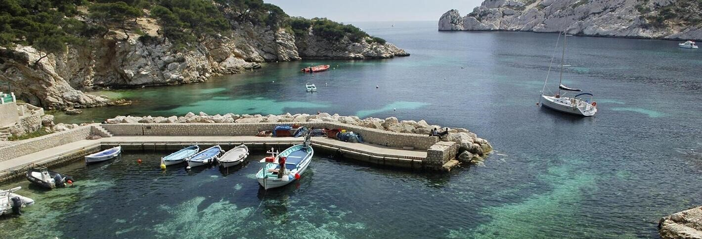
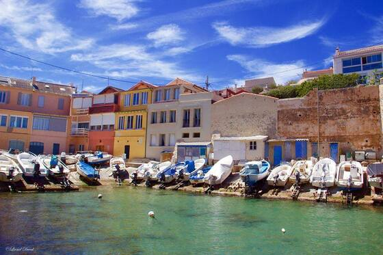
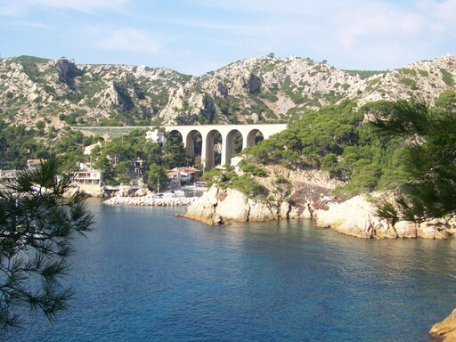
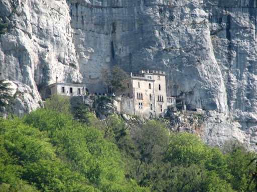
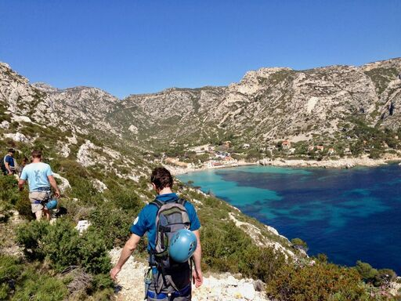
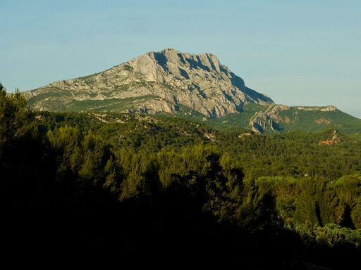
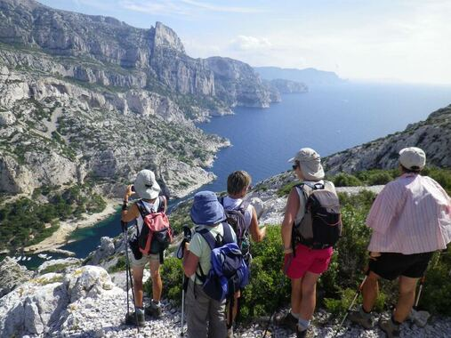

Les randonnées
Aux alentours de Marseille et en Provence, des circuits de randonnées aussi divers que variés sont à découvrir à toutes les saisons. Des Calanques au massif du Garlaban en passant par la Sainte Baume, découvrez les meilleures randonnées, tout en respectant ces différents cadres lors de chaque balade.
⎖ Les randonnées urbaines à Marseille

Grâce à son vaste territoire, Marseille propose aussi des randonnées urbaines. De véritables pépites sont à découvrir à l’intérieur même de la ville bordée par la mer tels que la Vallon des Auffes, Malmousque, ou encore le Panier. Il est possible de marcher 3,7 kilomètres le long de la Corniche Kennedy offrant une vue spectaculaire sur la rade. Le sentier métropolitain de randonnée pédestre GR2013 fait découvrir les quartiers de Marseille du Sud-Est au Nord-Ouest en mettant en valeur l’habitat des hommes, les traces d’activité humaine, les zones naturelles.
⎖ Randonnée sur la Côte Bleue

A découvrir également pour les amateurs de randonnée, la Côte Bleue, moins connue que les calanques mais tout aussi belle et pittoresque. De jolies randonnées face à Marseille et au bord de mer sont à faire, plus accessibles et faciles que celles du massif des Calanques.
⎖ Randonnée dans le Massif de la Sainte-Baume

Il y a aussi le massif de la Sainte Baume, vrai bijou de Provence qui s’impose parmi les autres reliefs avec sa roche calcaire de 1100 mètres de haut. Elle est occupée en partie par une grande forêt de feuillus, donnant un peu plus de fraîcheur, d’humidité et de protection au vent. Une petite route le traverse qui permet de rejoindre le col de l’Espigoulier avec à son sommet, une vue splendide sur Marseille et la mer.
⎖ Randonnée dans les Calanques

De nombreux circuits de randonnée pour tous les niveaux sont accessibles à Marseille. Bien entendu, il y a le Parc National des Calanques reconnu pour sa beauté unique et son eau turquoise. C’est un espace naturel protégé qu’il faut préserver et découvrir en toute saison. L’air marin, le vent dans les cheveux, l’horizon sur la mer donnent une sensation de liberté. Mais attention à la règlementation !
⎖ Randonnée dans le massif de la Sainte-Victoire

La “montagne” Sainte Victoire est chérie des Aixois. Elle marque le début du Pays d’Aix. Promenez-vous dans les paysages sublimes peints par Paul Cézanne, vous ne pourrez pas plus vous sentir dans le cœur de la Provence.
⎖ Randonnée dans les collines de Pagnol

Marseille est entourée de massifs naturels tels que le massif du Garlaban vers Aubagne qui permet aux randonneurs de partir sur les traces de Marcel Pagnol, ou le massif de l’Etoile, le massif de la Nerthe, la chaîne Saint Cyr qui permettent des balades alternatives, offrant toujours un beau panorama sur la ville et les environs.